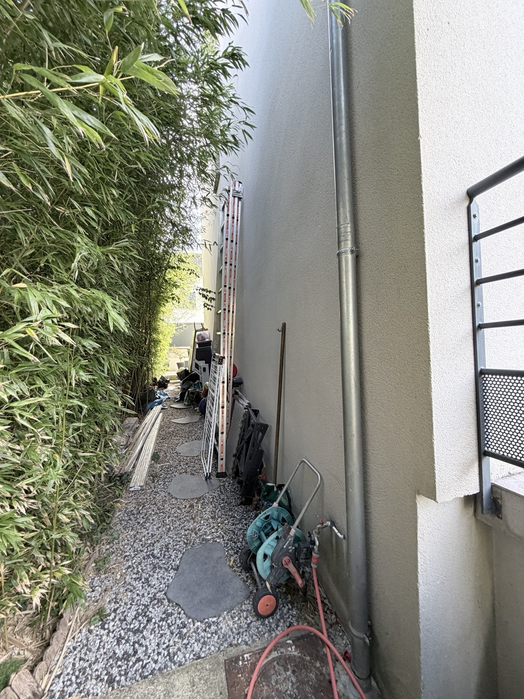
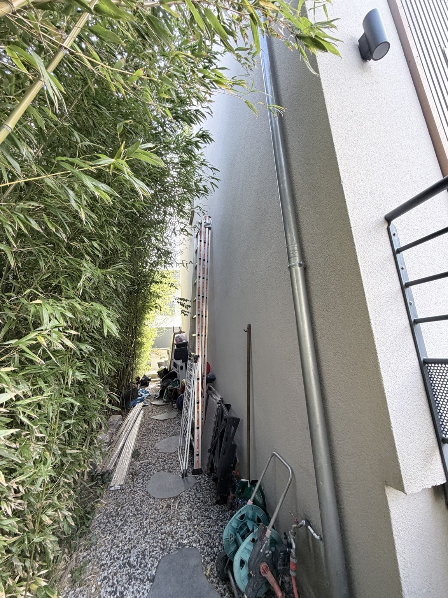
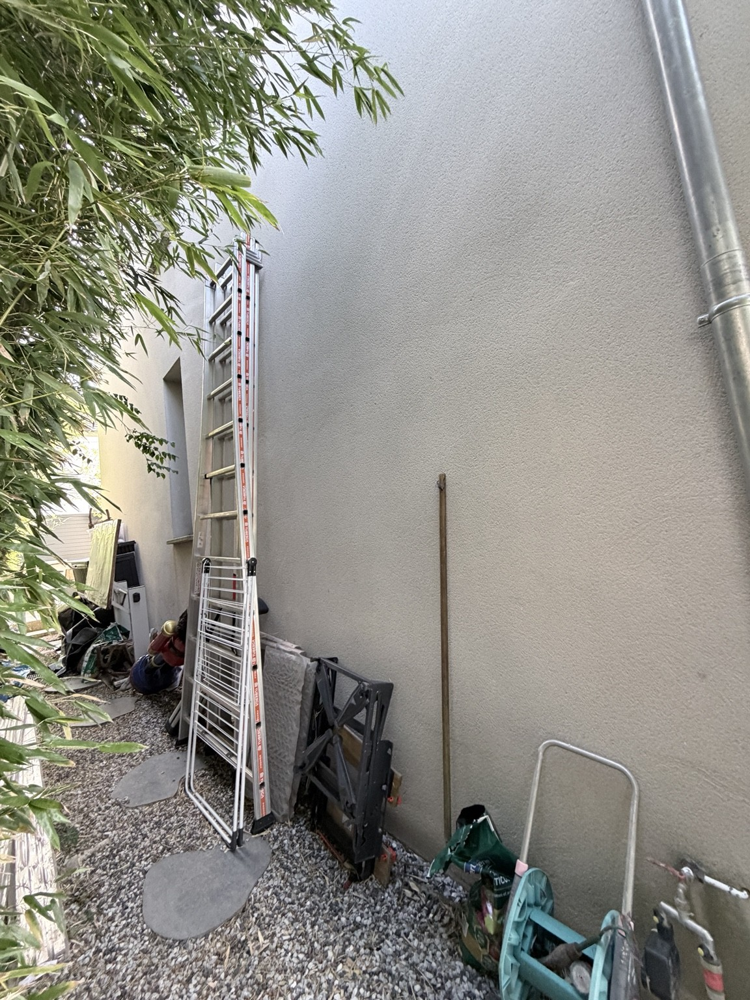
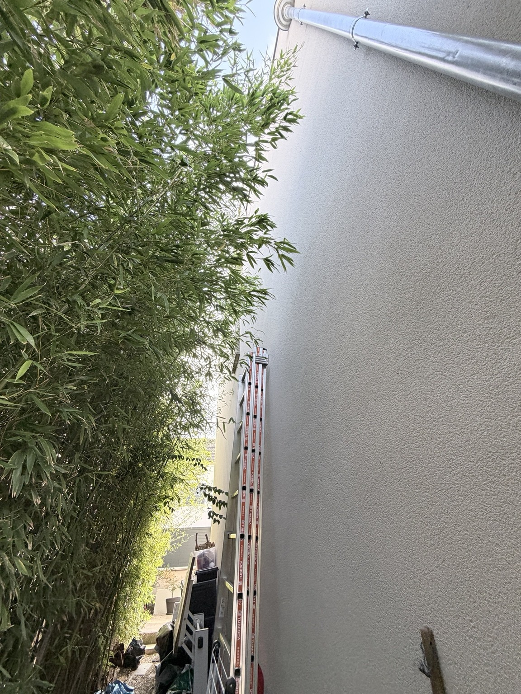

HL Home / Photos
La maison en images.
Des photographies réelles pour documenter les espaces et les projets.
Carnet de terrain
Le mur nord, en vrai.
Sept photographies fournies pour le projet. Clique sur une image pour l’ouvrir en grand.







Photographies de Hugo · Contenu non retouché · Métadonnées de localisation retirées.
Des photos au plan d’implantation →Projet
Prévoir une médiathèque personnelle accessible depuis HL Home, avec navigation et affichage adaptés aux écrans de la maison.
À définir
Sources des photos, hébergement, droits d'accès, sauvegardes et appareils d'affichage. Aucun choix de stockage ou de service n'est considéré comme validé à ce stade.
À l’intérieur
Les pièces, depuis Kalismart.
Entrée, salon, salle à manger, chambres, salles de bain, escaliers, palier, bureau et terrasse : 12 vues réelles ont été reprises des captures fournies. La cuisine reste sans photo, conformément à la source.
Découvrir Nos pièces →